Video
Próximamente
Conversaciones, conferencias y apariciones de La Casa. Aquí incrustaremos videos de YouTube o Vimeo.
Investigación estratégica / Social / Política / Mercados
«La atención es la forma más rara y más pura de generosidad.» — Simone Weil
La realidad rara vez habla con una sola voz. Entre las instituciones y la ciudadanía, entre las organizaciones y las personas, entre las decisiones y sus consecuencias, existen distancias que no pueden resolverse únicamente con información.
Investigar es comprender esas distancias.
En La Casa de Investigación estudiamos cómo las personas perciben, interpretan, sienten, recuerdan y actúan. Escuchamos antes de concluir. Contrastamos antes de afirmar. Buscamos comprender antes que confirmar nuestras propias hipótesis.
Creemos que toda decisión importante merece una comprensión rigurosa de la realidad humana que pretende transformar.
No producimos datos para llenar informes. Producimos conocimiento para reducir incertidumbre, ampliar la comprensión y mejorar la calidad de las decisiones.
Comprender es la condición previa para actuar con inteligencia.
Nuestra mirada
Toda organización construye, con el tiempo, una representación de la realidad. Esa representación orienta sus decisiones, pero también puede terminar alejándola de la experiencia concreta de las personas.
La investigación comienza allí.
Investigar es suspender las propias certezas para volver a comprender el mundo desde quienes lo viven. Es reconstruir cómo ciudadanos, clientes, consumidores, usuarios o audiencias perciben, interpretan y dan sentido a aquello con lo que interactúan.
No buscamos únicamente opiniones. Buscamos comprender los procesos psicológicos, culturales, sociales y sistémicos que las hacen posibles.
Por eso no entregamos simplemente datos. Restituimos una comprensión más profunda de la realidad, capaz de reducir incertidumbre, desafiar supuestos y ampliar la calidad de las decisiones.
Para lograrlo hemos desarrollado metodologías propias que integran la psicología, la sociología, la antropología y el pensamiento sistémico en un único marco analítico.
Porque toda buena decisión comienza con una mejor comprensión de la realidad.
Experiencia
Nuestra experiencia incluye, entre otros:
Cada investigación amplía nuestro conocimiento sobre un fenómeno particular; todas, en conjunto, profundizan nuestra comprensión de la condición humana.
Abordaje interdisciplinario
Ninguna disciplina, por sí sola, basta para comprender la complejidad humana. Por eso articulamos perspectivas provenientes de múltiples campos en un único marco analítico.
Los equipos
No creemos en estructuras rígidas ni en equipos permanentes para cualquier desafío. Cada proyecto exige una combinación específica de experiencia disciplinaria, conocimiento sectorial y trayectoria internacional. Por ello conformamos equipos a medida, integrando perfiles complementarios según la naturaleza de la investigación.
Psicólogos, sociólogos, antropólogos y especialistas en comunicación con más de quince años liderando investigaciones complejas en múltiples países y acompañando procesos políticos, institucionales y corporativos de alta exigencia.
Investigadores con formación doctoral en ciencias sociales, trayectoria académica en tres continentes y décadas de práctica investigativa aplicada a decisiones estratégicas de alto nivel.
Moderadores, etnógrafos e investigadores sociales con formación superior en antropología, psicología, sociología y comunicación, y años de oficio escuchando a las personas en contextos culturales profundamente diversos.
Profesionales provenientes de las matemáticas, la física, la filosofía, las ciencias sociales, el derecho, la comunicación y la gestión estratégica, incorporados según las necesidades específicas de cada proyecto.
La calidad de una investigación depende tanto de su metodología como de las personas que la hacen posible.
Consejo Directivo
La Casa de Investigación es dirigida por un equipo que integra experiencia en psicología, antropología, comunicación, tecnología, periodismo, derecho e investigación estratégica. La diversidad disciplinaria no es un atributo organizacional: es una condición para comprender fenómenos complejos desde perspectivas múltiples.
Director General
Psicólogo. Responsable de la dirección estratégica de la firma y de los proyectos para Norteamérica y España.
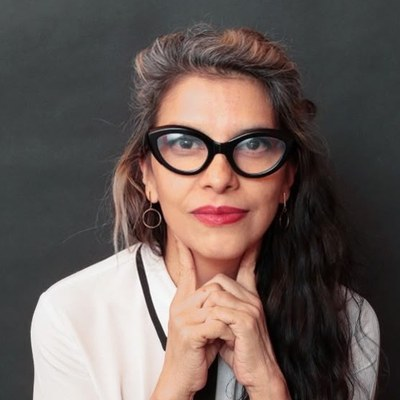
Directora de Proyectos
Antropóloga. Coordinadora de proyectos para México y Centroamérica.
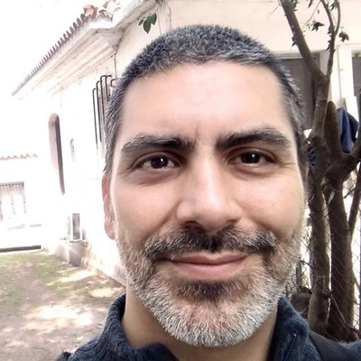
Director de Proyectos
Ingeniero de sistemas y desarrollo tecnológico. Coordinador de proyectos para el Cono Sur.
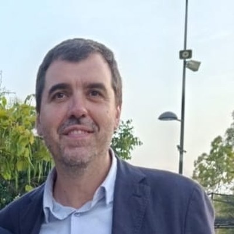
Coordinador Internacional
Periodista. Responsable de proyectos internacionales en Hispanoamérica.
Coordinador Regional
Abogado. Responsable de proyectos para África y el Archipiélago Canario.
Confían en nosotros
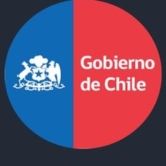

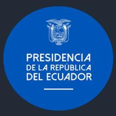
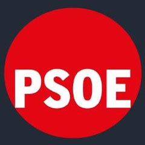


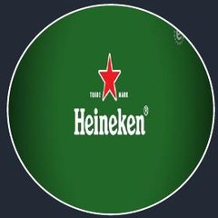


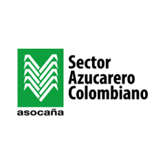
Algunas de nuestras colaboraciones
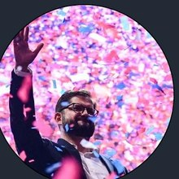
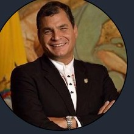
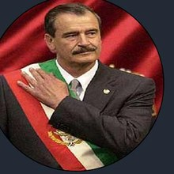
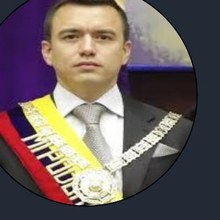
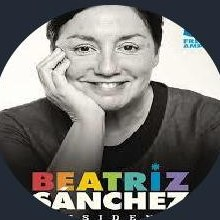
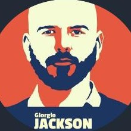
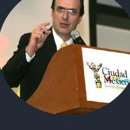
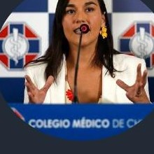
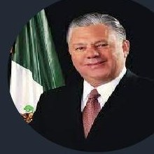
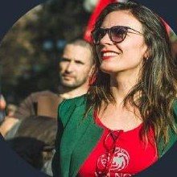
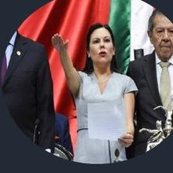
Reconocimientos
El trabajo de La Casa de Investigación ha sido distinguido en los principales certámenes internacionales de investigación y comunicación política.
Best Regional Research, Presidential Campaign — Washington DC, 2021.
Best Research, Presidential Campaign — Washington DC, 2022.

Best Research, Opposition Presidential Campaign — London, 2024.
Dos Polaris Awards por excelencia internacional en Political Communication & Public Affairs — London, 2026.
Miembros de
Con el reconocimiento de
Cuaderno
Conversaciones, conferencias y apariciones de La Casa. Aquí incrustaremos videos de YouTube o Vimeo.
Ensayos y análisis del equipo: método, coyuntura y los temas que investigamos.
Lecturas, referencias y recursos que nos parecen imprescindibles.